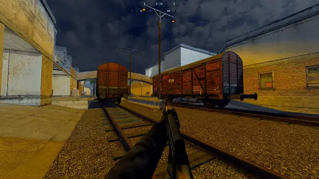
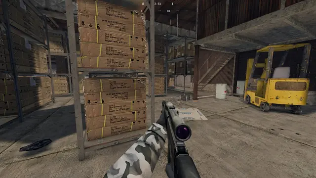
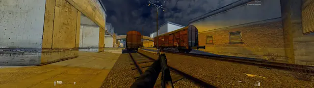
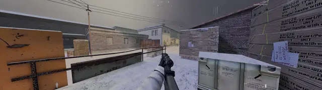
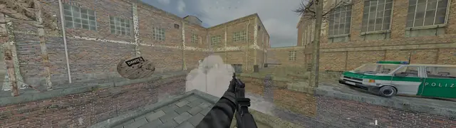
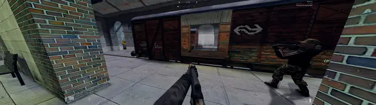
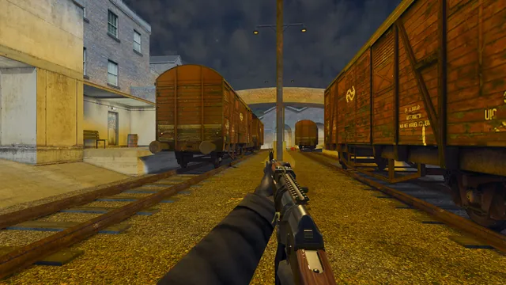
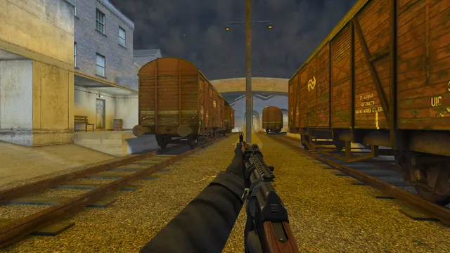
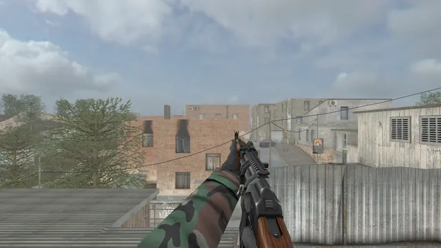
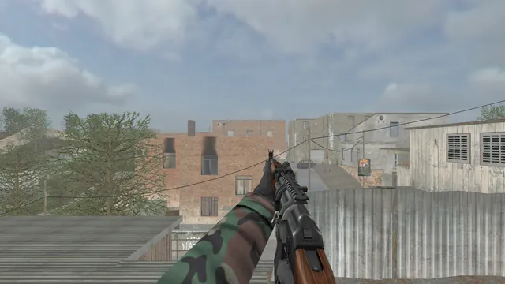

Media
Screenshots
Każdy obraz na tej stronie został uchwycony w grze na rendererze DirectX 12. Bez retuszu i bez poprawek.
Oficjalny zwiastun
Jedno życie. Każda runda.
Sześć oryginalnych map odbudowanych na DirectX 12, prawdziwa broń i rundy, które rozstrzyga jeden błąd. Oto TrueCombat: Platinum w ruchu.

Film jest odtwarzany z YouTube w trybie rozszerzonej prywatności. Nic nie ładuje się z YouTube, dopóki nie naciśniesz odtwarzania.
Muzyka: „Venom” – Scott Buckley, na licencji CC BY 4.0. scottbuckley.com.au
Obejrzyj na YouTube



















Prasa i twórcy
Otwórz pakiet prasowy
Potrzebujesz ich w pełnej rozdzielczości?
Pakiet prasowy zawiera bezstratne zrzuty, logo i zestawienie faktów. Używaj ich swobodnie w recenzjach, filmach i streamach.